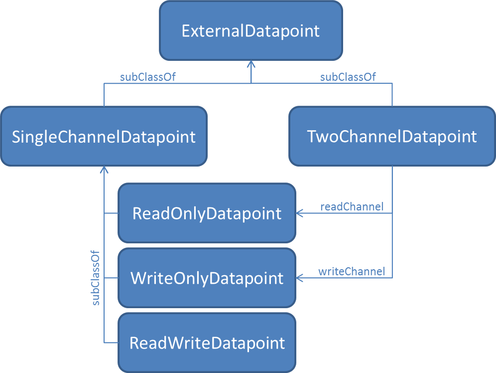

public interface ExternalDatapoint
An ExternalDatapoint is a readable and / or writable datapoint outside the
universAAL network. It is assumed that ontological properties of instances of
ExternalComponent can be mapped to such datapoints.
Communication gateways may pack all the info (no
matter if a simple address or a complex structure) needed for mapping
ontological properties of reachable external components in objects that
implement this interface and store / fetch it for their list of components
using ExternalComponent.addPropMapping(String, ExternalDatapoint) /
ExternalComponent.getDatapoint(String).
It is important that gateways map each ontological property of a distinct external component to a single instance of this class. Therefore, in cases that different addresses have to be used for reading and writing, gateways will have to encapsulate this complexity properly within objects that implement this interface. A way to do so, is to define the specific classes for implementing this interface the following way:

Another important point is related to the info needed for realizing the read and write actions; in the above text, this was most of the times reduced only to the addressing aspect, but often also type info as well as hints for converting the external values to values compatible with the used ontological model have to be included. On the other hand, even the "addressing" aspect may not be resolved by just of an integer value. As a simple example, a modbus gateway needs in addition to an address also the size of each read or write access in bits / bytes / words.
| Modifier and Type | Method and Description |
|---|---|
ExternalComponent |
getComponent()
Returns the
external component to which this
datapoint belongs. |
String |
getProperty()
Returns the URI of the ontological property that maps to this datapoint.
|
boolean |
isReadOnly()
If this method returns true, it means that the status / value reachable
at this address can be read but cannot be changed.
|
boolean |
isWriteOnly()
If this method returns true, it means that the status / value reachable
at this address can be changed but cannot be read.
|
boolean isReadOnly()
isWriteOnly() must return false.
If this method returns false, the interpretation will depend on the
return value of isWriteOnly(): in case of true, the status /
value reachable at this address cannot be read but can be changed.
Otherwise, it is both read- and writable.
No implementation of ExternalDatapoint may return for both this and the
isWriteOnly() method simultaneously true!boolean isWriteOnly()
isReadOnly() must return false.
If this method returns false, the interpretation will depend on the
return value of isReadOnly(): in case of true, the status /
value reachable at this address cannot be changed but can be read.
Otherwise, it is both read- and writable.
No implementation of ExternalDatapoint may return for both this and the
isReadOnly() method simultaneously true!ExternalComponent getComponent()
external component to which this
datapoint belongs.String getProperty()
Copyright © 2017 universAAL Consortium. All rights reserved.